SquareMatrix¶
-
class
SquareMatrix(*args)¶ Real square matrix.
Parameters: - size : int,
 , optional
, optional Matrix size. Default is 1.
- values : sequence of float with size
 , optional
, optional Values. OpenTURNS uses column-major ordering (like Fortran) for reshaping the flat list of values. Default creates a zero matrix.
Examples
Create a matrix
>>> import openturns as ot >>> M = ot.SquareMatrix(2, range(2 * 2)) >>> print(M) [[ 0 2 ] [ 1 3 ]]
Get or set terms
>>> print(M[0, 0]) 0.0 >>> M[0, 0] = 1.0 >>> print(M[0, 0]) 1.0 >>> print(M[:, 0]) [[ 1 ] [ 1 ]]
Create an openturns matrix from a square numpy 2d-array (or matrix, or 2d-list)…
>>> import numpy as np >>> np_2d_array = np.array([[1.0, 2.0], [3.0, 4.0]]) >>> ot_matrix = ot.SquareMatrix(np_2d_array)
and back
>>> np_matrix = np.matrix(ot_matrix)
Basic linear algebra operations (provided the dimensions are compatible)
>>> A = ot.Matrix([[1.0, 2.0], [3.0, 4.0], [5.0, 6.0]]) >>> B = ot.SquareMatrix(np.eye(2)) >>> C = ot.Matrix(3, 2, [1.0] * 3 * 2) >>> print(A * B - C) [[ 0 1 ] [ 2 3 ] [ 4 5 ]] >>> A = ot.SquareMatrix([[1.0, 2.0], [3.0, 4.0]]) >>> print(A ** 2) [[ 7 10 ] [ 15 22 ]]
Attributes: thisownThe membership flag
Methods
clean(threshold)Set elements smaller than a threshold to zero. computeDeterminant([keepIntact])Compute the determinant. computeEV([keepIntact])Compute the eigenvalues decomposition (EVD). computeEigenValues([keepIntact])Compute eigenvalues. computeGram([transpose])Compute the associated Gram matrix. computeLogAbsoluteDeterminant([keepIntact])Compute the logarithm of the absolute value of the determinant. computeQR([fullQR, keepIntact])Compute the QR factorization. computeSVD([fullSVD, keepIntact])Compute the singular values decomposition (SVD). computeSingularValues([keepIntact])Compute the singular values. computeTrace()Compute the trace of the matrix. getClassName()Accessor to the object’s name. getDimension()Accessor to the dimension (the number of rows). getId()Accessor to the object’s id. getImplementation(*args)Accessor to the underlying implementation. getName()Accessor to the object’s name. getNbColumns()Accessor to the number of columns. getNbRows()Accessor to the number of rows. isDiagonal()Test whether the matrix is diagonal or not. isEmpty()Tell if the matrix is empty. setName(name)Accessor to the object’s name. solveLinearSystem(*args)Solve a square linear system whose the present matrix is the operator. transpose()Transpose the matrix. -
__init__(*args)¶ Initialize self. See help(type(self)) for accurate signature.
-
clean(threshold)¶ Set elements smaller than a threshold to zero.
Parameters: - threshold : float
Threshold for zeroing elements.
Returns: - cleaned_matrix :
Matrix Input matrix with elements smaller than the threshold set to zero.
-
computeDeterminant(keepIntact=True)¶ Compute the determinant.
Parameters: - keep_intact : bool, optional
A flag telling whether the present matrix can be overwritten or not. Default is True and leaves the present matrix unchanged.
Returns: - determinant : float
The square matrix determinant.
Examples
>>> import openturns as ot >>> A = ot.SquareMatrix([[1.0, 2.0], [3.0, 4.0]]) >>> A.computeDeterminant() -2.0
-
computeEV(keepIntact=True)¶ Compute the eigenvalues decomposition (EVD).
The eigenvalues decomposition of a square matrix
 with
size
with
size  reads:
reads: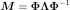
where 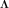 is an 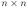 diagonal matrix and 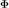 is an orthogonal matrix.
Parameters: - keep_intact : bool, optional
A flag telling whether the present matrix can be overwritten or not. Default is True and leaves the present matrix unchanged.
Returns: - eigen_values :
ComplexCollection The vector of eigenvalues with size
that form the diagonal of
the matrix of the EVD.- Phi :
SquareComplexMatrix The left matrix of the EVD.
Notes
This uses LAPACK’S DGEEV.
Examples
>>> import openturns as ot >>> import numpy as np >>> M = ot.SquareMatrix([[1.0, 2.0], [3.0, 4.0]]) >>> eigen_values, Phi = M.computeEV() >>> Lambda = ot.SquareComplexMatrix(M.getDimension()) >>> for i in range(eigen_values.getSize()): ... Lambda[i, i] = eigen_values[i] >>> from scipy.linalg import inv # SquareComplexMatrix does not implement solveLinearSystem >>> Phi, Lambda = np.matrix(Phi), np.matrix(Lambda) >>> np.testing.assert_array_almost_equal(Phi * Lambda * inv(Phi), M)
-
computeEigenValues(keepIntact=True)¶ Compute eigenvalues.
Parameters: - keep_intact : bool, optional
A flag telling whether the present matrix can be overwritten or not. Default is True and leaves the present matrix unchanged.
Returns: - eigenvalues :
ComplexCollection Eigenvalues.
See also
Examples
>>> import openturns as ot >>> M = ot.SquareMatrix([[1.0, 2.0], [3.0, 4.0]]) >>> M.computeEigenValues() [(-0.372281,0),(5.37228,0)]
-
computeGram(transpose=True)¶ Compute the associated Gram matrix.
Parameters: - transposed : bool
Tells if matrix is to be transposed or not. Default value is True
Returns: - MMT :
Matrix The Gram matrix.
Notes
When transposed is set to True, the method computes
 .
Otherwise it computes 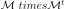
.
Otherwise it computes 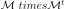Examples
>>> import openturns as ot >>> M = ot.Matrix([[1.0, 2.0], [3.0, 4.0], [5.0, 6.0]]) >>> MtM = M.computeGram() >>> print(MtM) [[ 35 44 ] [ 44 56 ]] >>> MMt = M.computeGram(False) >>> print(MMt) [[ 5 11 17 ] [ 11 25 39 ] [ 17 39 61 ]]
-
computeLogAbsoluteDeterminant(keepIntact=True)¶ Compute the logarithm of the absolute value of the determinant.
Parameters: - keep_intact : bool, optional
A flag telling whether the present matrix can be overwritten or not. Default is True and leaves the present matrix unchanged.
Returns: - determinant : float
The logarithm of the absolute value of the square matrix determinant.
- sign : float
The sign of the determinant.
Examples
>>> import openturns as ot >>> A = ot.SquareMatrix([[1.0, 2.0], [3.0, 4.0]]) >>> A.computeLogAbsoluteDeterminant() [0.693147..., -1.0]
-
computeQR(fullQR=False, keepIntact=True)¶ Compute the QR factorization. By default, it is the economic decomposition which is computed.
The economic QR factorization of a rectangular matrix
with
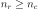 (more rows than columns) is defined as follows: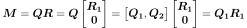
where
 is an 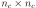 upper triangular matrix,
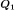 is
is an 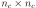 upper triangular matrix,
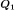 is  ,
,  is
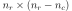, and and
both have orthogonal columns.
is
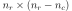, and and
both have orthogonal columns.Parameters: - full_qr : bool, optional
A flag telling whether Q, R or Q1, R1 are returned. Default is False and returns Q1, R1.
- keep_intact : bool, optional
A flag telling whether the present matrix is preserved or not in the computation of the decomposition. Default is True and leaves the present matrix unchanged.
Returns: - Q1 :
Matrix The orthogonal matrix of the economic QR factorization.
- R1 :
TriangularMatrix The right (upper) triangular matrix of the economic QR factorization.
- Q :
Matrix The orthogonal matrix of the full QR factorization.
- R :
TriangularMatrix The right (upper) triangular matrix of the full QR factorization.
Notes
The economic QR factorization is often used for solving overdetermined linear systems (where the operator
has ) in the
least-square sense because it implies solving a (simple) triangular system: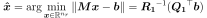
This uses LAPACK’s DGEQRF and DORGQR.
Examples
>>> import openturns as ot >>> import numpy as np >>> M = ot.Matrix([[1.0, 2.0], [3.0, 4.0], [5.0, 6.0]]) >>> Q1, R1 = M.computeQR() >>> np.testing.assert_array_almost_equal(Q1 * R1, M)
-
computeSVD(fullSVD=False, keepIntact=True)¶ Compute the singular values decomposition (SVD).
The singular values decomposition of a rectangular matrix
with
size 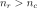 reads:
where
 is an
is an  orthogonal matrix,
orthogonal matrix,
 is an diagonal matrix and
is an diagonal matrix and
 is an orthogonal matrix.
is an orthogonal matrix.Parameters: - fullSVD : bool, optional
Whether the null parts of the orthogonal factors are explicitely stored or not. Default is False and computes a reduced SVD.
- keep_intact : bool, optional
A flag telling whether the present matrix can be overwritten or not. Default is True and leaves the present matrix unchanged.
Returns: - singular_values :
Point The vector of singular values with size
 that
form the diagonal of the matrix
of the SVD.
that
form the diagonal of the matrix
of the SVD.- U :
SquareMatrix The left orthogonal matrix of the SVD.
- VT :
SquareMatrix The transposed right orthogonal matrix of the SVD.
Notes
This uses LAPACK’s DGESDD.
Examples
>>> import openturns as ot >>> import numpy as np >>> M = ot.Matrix([[1.0, 2.0], [3.0, 4.0], [5.0, 6.0]]) >>> singular_values, U, VT = M.computeSVD(True) >>> Sigma = ot.Matrix(M.getNbRows(), M.getNbColumns()) >>> for i in range(singular_values.getSize()): ... Sigma[i, i] = singular_values[i] >>> np.testing.assert_array_almost_equal(U * Sigma * VT, M)
-
computeSingularValues(keepIntact=True)¶ Compute the singular values.
Parameters: - fullSVD : bool, optional
Whether the null parts of the orthogonal factors are explicitely stored or not. Default is False and computes a reduced SVD.
- keep_intact : bool, optional
A flag telling whether the present matrix can be overwritten or not. Default is True and leaves the present matrix unchanged.
Returns: - singular_values :
Point The vector of singular values with size
that
form the diagonal of the matrix
of the SVD decomposition.
See also
Examples
>>> import openturns as ot >>> M = ot.Matrix([[1.0, 2.0], [3.0, 4.0], [5.0, 6.0]]) >>> print(M.computeSingularValues(True)) [9.52552,0.514301]
-
computeTrace()¶ Compute the trace of the matrix.
Returns: - trace : float
The trace of the matrix.
Examples
>>> import openturns as ot >>> M = ot.SquareMatrix([[1.0, 2.0], [3.0, 4.0]]) >>> M.computeTrace() 5.0
-
getClassName()¶ Accessor to the object’s name.
Returns: - class_name : str
The object class name (object.__class__.__name__).
-
getDimension()¶ Accessor to the dimension (the number of rows).
Returns: - dimension : int
-
getId()¶ Accessor to the object’s id.
Returns: - id : int
Internal unique identifier.
-
getImplementation(*args)¶ Accessor to the underlying implementation.
Returns: - impl : Implementation
The implementation class.
-
getName()¶ Accessor to the object’s name.
Returns: - name : str
The name of the object.
-
getNbColumns()¶ Accessor to the number of columns.
Returns: - n_columns : int
-
getNbRows()¶ Accessor to the number of rows.
Returns: - n_rows : int
-
isDiagonal()¶ Test whether the matrix is diagonal or not.
Returns: - test : bool
Answer.
-
isEmpty()¶ Tell if the matrix is empty.
Returns: - is_empty : bool
True if the matrix contains no element.
Examples
>>> import openturns as ot >>> M = ot.Matrix([[]]) >>> M.isEmpty() True
-
setName(name)¶ Accessor to the object’s name.
Parameters: - name : str
The name of the object.
-
solveLinearSystem(*args)¶ Solve a square linear system whose the present matrix is the operator.
Parameters: - rhs : sequence of float or
Matrixwith values or rows, respectively
values or rows, respectively The right hand side member of the linear system.
- keep_intact : bool, optional
A flag telling whether the present matrix can be overwritten or not. Default is True and leaves the present matrix unchanged.
Returns: Notes
This will handle both matrices and vectors. Note that you’d better type explicitely the matrix if it has some properties that could simplify the resolution (see
TriangularMatrix).This uses LAPACK’S DGESV for matrices and DGELSY for vectors.
Examples
>>> import openturns as ot >>> import numpy as np >>> M = ot.SquareMatrix([[1.0, 2.0], [3.0, 4.0]]) >>> b = ot.Point([1.0] * 2) >>> x = M.solveLinearSystem(b) >>> np.testing.assert_array_almost_equal(M * x, b)
- rhs : sequence of float or
-
thisown¶ The membership flag
-
transpose()¶ Transpose the matrix.
Returns: - MT :
SquareMatrix The transposed matrix.
Examples
>>> import openturns as ot >>> M = ot.SquareMatrix([[1.0, 2.0], [3.0, 4.0]]) >>> print(M) [[ 1 2 ] [ 3 4 ]] >>> print(M.transpose()) [[ 1 3 ] [ 2 4 ]]
- MT :
- size : int,